Alva-works ERP 完全講義マニュアル
「経理の資格もないし、簿記の『借方』『貸方』すらよく分からない…」という新任担当者の方でも大丈夫です。 本マニュアルは、ベテランの経理講師が隣に座って語りかけるように、「なぜこの操作をするのか」「裏側でお金はどう動いているのか」を1つひとつ丁寧に解説します。 日々の請求書発行から、アルバワークス固有の「DP-5000輸入原価・シリアル管理」、そして月末の決算まで、すべてこの一冊で迷わず進められます！
はじめに：経理ってなに？（5分でわかる超入門）
1. 経理のゴールは「P/L」と「B/S」の2つだけ！
経理の仕事を一言でいうと、「会社のお金の動きを記録して、2枚のレポートを作ること」です。 世の中にはたくさんの会計用語がありますが、覚えるべき基本レポートはこの2つしかありません。
「1年間の成績表（いくら儲かったか？）」
学校の通信簿と同じです。「売上がいくらあって（収入）」、「商品の仕入れや経費でいくら使って（支出）」、最終的に「手元にいくら利益が残ったか」を1年間の合計で示します。
「会社の健康診断書・財産リスト（いま何があるか？）」
今日の時点で、「銀行口座に現金がいくらあるか」「まだ振り込まれていない売掛金がいくらあるか」「借金がいくらあるか」という、会社の財産と借金の“いまの残高”を示します。
あなたが画面で「請求書を発行する」「レシートをAIで読み込む」「給料を計算する」という普段の業務操作を行うだけで、アプリが裏側で自動的に正しい会計仕訳へ変換し、P/LとB/Sへリアルタイムに数字を流し込んでくれます。
2. 経理担当者の「1ヶ月のルーティンカレンダー」
日々の仕事は、決まったリズムで進みます。いつ何をすればよいのか、全体像を頭に入れておきましょう。
- もらった領収書・レシートをスマホやPCから「AI OCR」でパシャリと読み込む
- 商品（DP-5000等）が出荷されたら、請求書を発行してシリアル番号を紐付ける
- 銀行口座の通帳をオンラインでチェック
- お客様から請求代金が振り込まれていたら、「売上・入金消込」ボタンを押す
- 社員の勤怠打刻を確認して給与明細を発行
- 「💼 給与仕訳を財務会計へ計上」ボタンを1クリックして会計へ連動
- 社員が立て替えた経費をまとめて精算振込
- B/Sの預金残高と銀行通帳の残高が1円単位で合っているか確認
- 「月次締め（ロック）」をかけて数字を確定
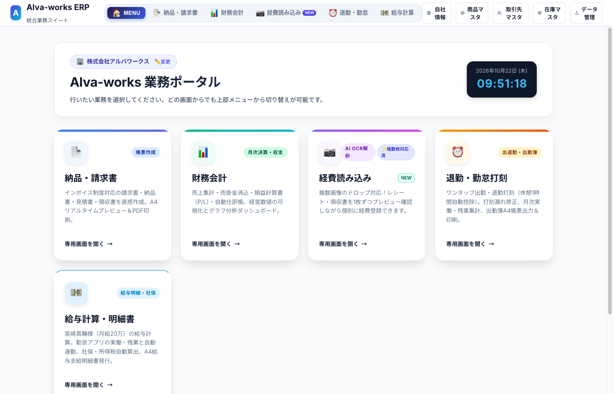
初期設定：会計年度とスタート時の口座残高を合わせよう
1. 自社情報と決算期（期首月）の確認
会社には「1年の区切り（事業年度・決算期）」があります。アルバワークスは 4月始まり〜翌年3月終わり（4月期首 / 3月決算） です。 画面右上の「自社情報」アイコンから確認できます。
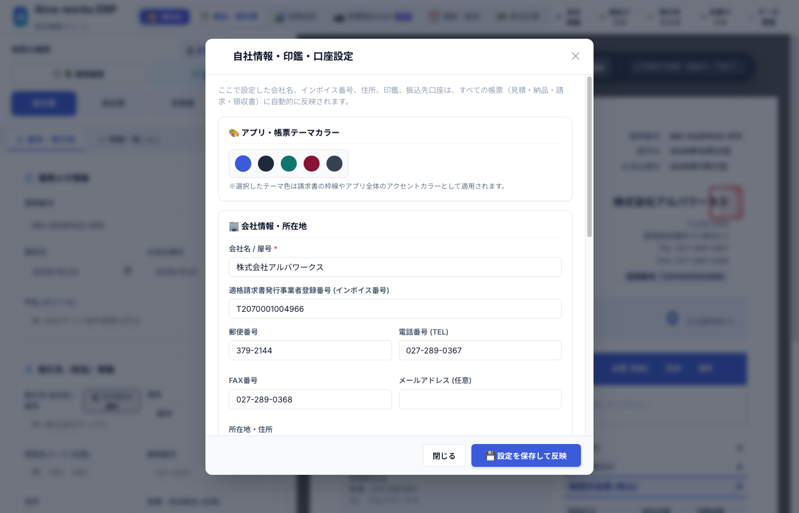
2. 「期首残高設定」のやり方：なぜこれが必要なの？
新しい年度がスタートした日の朝、会社の銀行口座にはすでに「前期からの繰越金（例: 500万円）」がありますよね。 ERPの貸借対照表（B/S）にこの金額が入っていないと、B/Sの預金残高と実際の銀行通帳の残高がズレてしまいます。
左カラムに「期首残高設定（貸借バランス）」の入力フォームが表示されます。
通帳の4月1日朝の残高をそのまま「102 普通預金」の借方（資産）に入力します。
会計の鉄則として「左側（資産）＝ 右側（負債＋純資産）」が常に一致していなければなりません。 差額が0円になると、画面のバッジが「✅ 貸借一致 (差額 0円)」に変わります。
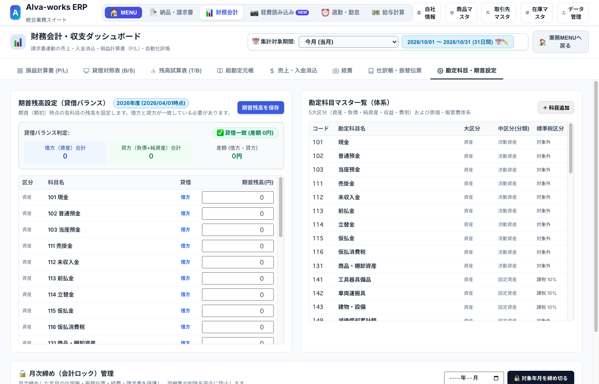
DP-5000の仕入れ・輸入原価・シリアル管理（アルバワークス固有業務）
1. なぜ「輸入にかかった費用」を全部合算するの？（原価按分の講義）
アルバワークスの主力製品「AI自動追尾カメラ DP-5000」は、中国の工場から輸入しています。 ここで初心者が一番迷うのが、「1台あたりの仕入れ値（原価）をいくらで計算すればいいの？」という点です。
もし本体代金だけで原価を計算してしまうと、「本当は経費がたくさんかかっているのに、儲かっているように見えてしまう（見かけの利益の罠）」に陥ります。
だから、輸入にかかったすべての付随費用を本体代金に足し算して、入荷した台数で割り算する必要があります。これを「原価按分（あんぶん）」と呼びます。
- 関税: 税金ですが商品の「原価」に含めます（本体代金に合算してOK）。
- 輸入消費税: 原価には含めません！ あとで国に納める消費税から引いてもらえる（仮払消費税になる）ため、別枠で入力します。
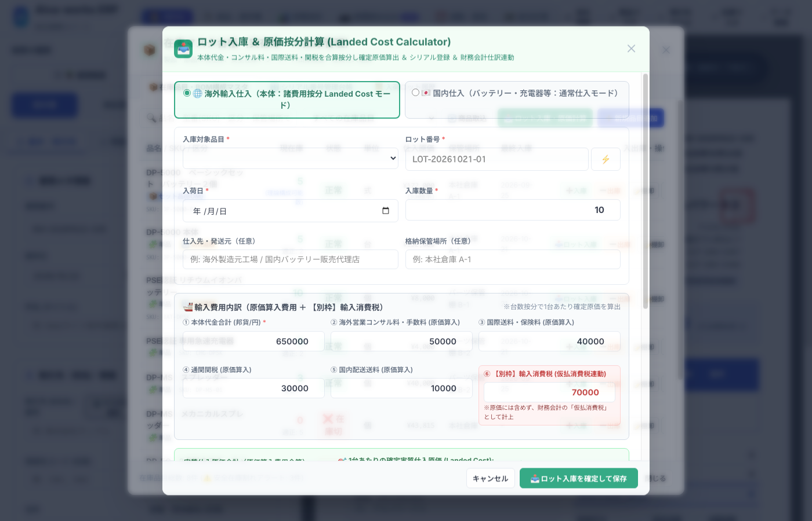
2. セット品（BOM）の仕組み：PSEバッテリー2個＋充電器1個
DP-5000は、中国からの本体だけではお客様へ出荷できません。 日本の安全基準（PSEマーク）を取得した「専用バッテリー（2個）」と「急速充電器（1個）」を国内で調達し、セットにして販売しています。
ERPの「在庫マスタ」では、このセット構成（BOM : 部品表）が最初から登録されています。
| セット品名 | 構成部品（中身） | 必要数量 | 部品原価（目安） | セット合計原価 |
|---|---|---|---|---|
| DP-5000 基本セット （販売単価: ¥88,000） |
DP-5000 本体（輸入・ロット原価按分済） | 1 台 | ¥45,000 | ¥52,500 （粗利益: ¥35,500） |
| PSE認証 高容量バッテリーパック | 2 個 | ¥2,500 × 2 = ¥5,000 | ||
| 専用急速AC充電器 | 1 個 | ¥2,500 |
3. シリアル番号の登録と台帳追跡
精密機械やバッテリーは、万が一の初期不良や保証修理の対応ができるよう、製品1つひとつに振られた「シリアル番号（製造番号）」を台帳で管理しています。 「シリアル番号管理台帳」タブを開くと、どの本体とバッテリーが現在在庫にあり、どのシリアルがお客様へ出荷されたかを一瞬で検索・追跡できます。
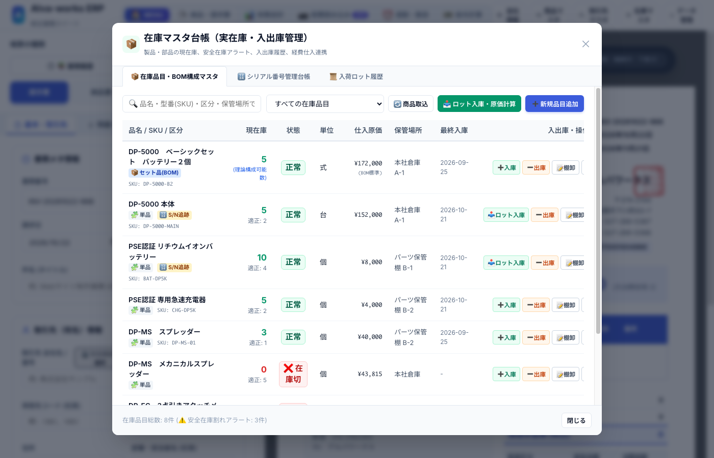
売上の計上：納品書・請求書を作ってDP-5000を出荷しよう
1. 請求書を作った瞬間に起きる「裏側の会計マジック」（発生主義）
「まだお金が銀行口座に振り込まれていないのに、売上にしていいの？」と初心者は疑問に思いますよね。 日本の会計ルール（企業会計原則）では、「商品を出荷・納品してお客様に請求書を出した日」に売上を記録するルールになっています。これを専門用語で「発生主義」と呼びます。
（貸方）213 仮受消費税等 8,000円
2. 納品・請求書の作成と「シリアル番号引当」の手順
数量「1」、単価「88,000円」を入力します。
在庫にある本体シリアル（1つ）とバッテリーシリアル（2つ）のチェックボックスをONにして「確定」します。
これで完了です！裏側で自動的に以下の3つが同時に実行されます：
① 在庫マスタから本体1台・バッテリー2個・充電器1個が自動で減る
② 財務会計の売上高に88,000円（税抜80,000円）が計上される
③ 売上原価（52,500円）が計上され、当月の粗利益が自動計算される
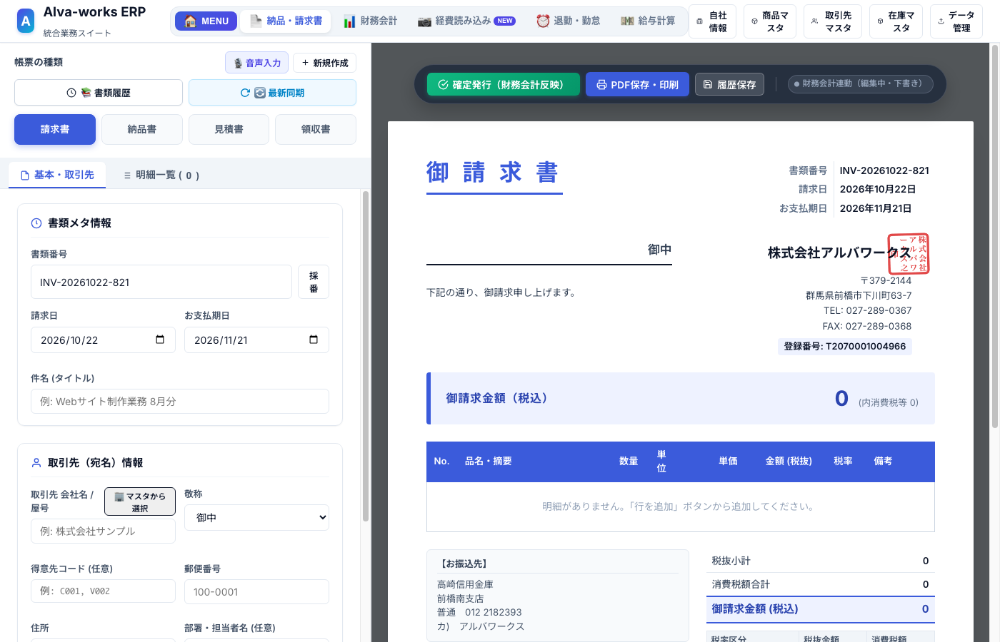
入金の確認：銀行に振り込まれたら「売掛金消込」をしよう
1. 売掛金消込（けしこみ）の基本手順
請求書を出したあと、月末や翌月末にお客様から銀行口座へお金が振り込まれます。 通帳でお金を確認したら、ERPの「売上・入金消込」タブを開きます。
該当する請求書の横にある「入金済みにする」ボタンを押すだけで、第3章で作った「売掛金（お金をもらう権利）」が消えて、代わりに「普通預金（実際の現金）」へと入れ替わります。
2. 【超頻出】「請求額より少ない金額」が振り込まれたら？（振込手数料の差引）
実務で最もよくあるのが、「86,240円の請求書を出したのに、通帳を見たら85,800円しか振り込まれていない！」というケースです。 これは相手が「銀行の振込手数料（440円）」を差し引いて振り込んできたためです。
また、差額の440円は会社が負担した「経費（支払手数料）」として計上できるので、きちんと処理しないと余分に税金を払うことになってしまいます！
手数料入力用のミニモーダルが開きます。
これだけで、裏側で以下の美しい複合仕訳が自動生成されます：
（借方）615 支払手数料 440円
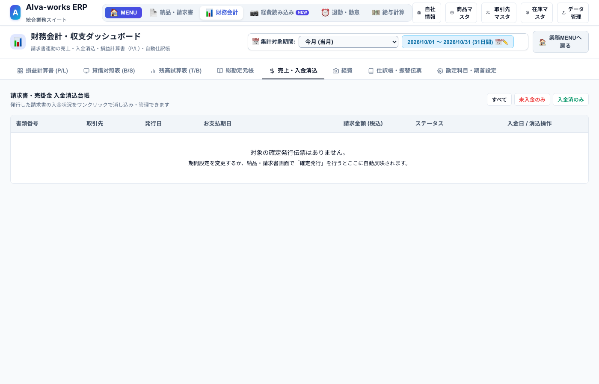
日々の経費と精算：レシートAI読込と社員の立替精算
1. AI OCRでレシートを読み込む手順
ガソリンスタンド、コインパーキング、コンビニ、事務用品などのレシートは、手で入力する必要はありません。 「AIレシート読み込み」画面で画像をアップロードするだけで、「日付・支払先店名・金額・税率（10%/8%）・適格請求書（T番号）」をGemini AIが瞬時に読み取って自動入力してくれます。
2. 決済方法（お金の出どころ）の選び方講座
初心者がレシート登録で一番迷うのが「決済方法」です。以下の表のルール通りに選べば100%間違いません。
| 実際のお金の払い方 | 選ぶべき決済方法 | 会計上の意味（裏側の動き） |
|---|---|---|
| 会社のレジ・金庫の現金で支払った | 101 現金 | 会社の現金残高がマイナスされる |
| 会社の銀行口座からデビットや振込で支払った | 102 普通預金 | 通帳の預金残高が直接マイナスされる |
| 会社名義のクレジットカードで支払った | 212 未払金（法人カード） | 今はお金が出ず、翌月口座から引き落とされる負債になる |
| 社員（小林さん・宮崎さん）が自分の財布や個人カードで立て替えた | 立替者（社員名）を選択 | 「会社が社員に借金している状態（未払金）」として集計され、月末に一括精算できる |
3. 月末の「社員立替経費の一括精算」手順
営業活動などで社員が自腹で立て替えた経費は、月末にまとめて会社から社員個人の銀行口座へ振り込みます。
「小林さん: 3件 ¥14,280」「宮崎さん: 5件 ¥32,500」のように未精算額がリアルタイム表示されています。
会社のネットバンキングから社員の口座へお金を振り込んだあと、このボタンを押します。 対象の経費が一括で「精算済み」に切り替わり、財務会計の預金口座から精算額がマイナスされます。
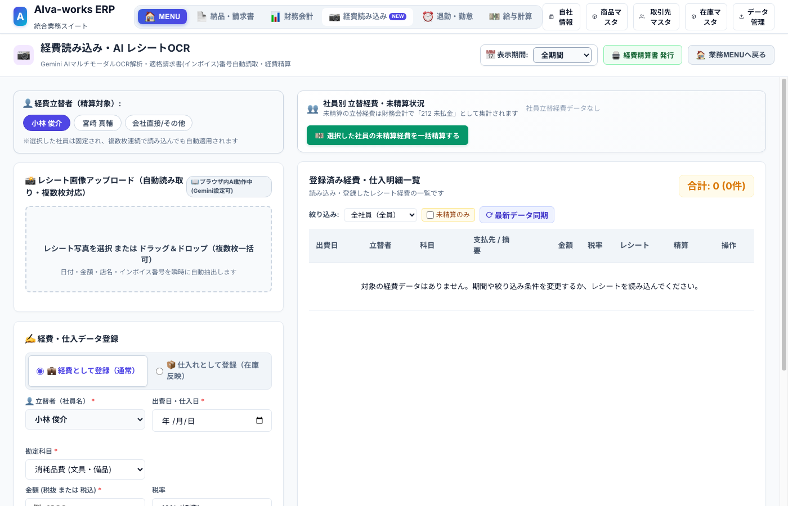
勤怠と給料日：給与明細の発行と会計へのワンクリック連携
1. なぜ給料の仕訳は複雑なの？（「預り金」のやさしい解説）
給料日になると、初心者が一番混乱するのが「給与天引き（源泉所得税・住民税・社会保険料）」です。
差額の55,000円はどこへ行ったのでしょう？ 会社がネコババしたわけではありません！
会社は、社員が国や自治体に納めるべき「健康保険料・厚生年金・所得税」を給料から天引きして、「一時的に会社が預かっていて（預り金）、あとで税務署や年金事務所にまとめて納付する」という仕組みになっています。
だから会計では、「給料は30万円払ったけれど、手元に5万5千円の預り金が残り、銀行から出たのは24万5千円」という記録をしなければなりません。
2. 「💼 給与仕訳を財務会計へ計上」ボタンの使い方
この複雑な計算と仕訳も、手作業でする必要は一切ありません！
基本給・残業代・控除額が自動計算されて給与明細が完成します。
確認ダイアログで「計上する」を押すだけで、役員報酬・給料手当・法定福利費・預り金・普通預金の複合仕訳が財務会計の仕訳帳へ瞬時に起票されます。
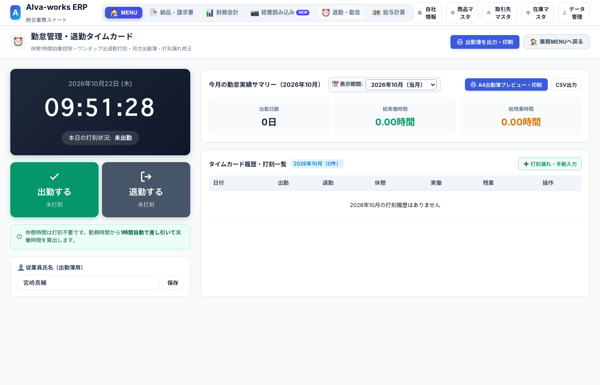
応用と月次チェック：振替伝票・帳簿の見方・月次締め
1. 「振替伝票（手動仕訳）」はどんなときに使うの？
請求書やレシート以外の、特殊なお金の動きがあったときだけ「振替伝票」を使います。 実務で使うパターンは主に以下の4つだけです。
| どんな取引のとき？ | 借方（左） | 貸方（右） | 具体例 |
|---|---|---|---|
| 銀行口座から現金を引き出して手元金庫に入れた | 101 現金 | 102 普通預金 | 口座から10万円出金して会社の財布に入れた |
| 銀行から借りたお金（借入金）の元本と利息を返済した | 221 短期借入金 621 支払利息 |
102 普通預金 | 元本50,000円＋利息2,000円が口座から引き落とされた |
| 給料から天引きしていた源泉所得税を税務署に納めた | 214 預り金 | 102 普通預金 | 納付書で預かっていた税金30,000円を支払った |
| 決算で減価償却費を計上した | 618 減価償却費 | 141 工具器具備品 | パソコンなどの固定資産の価値を減らす |
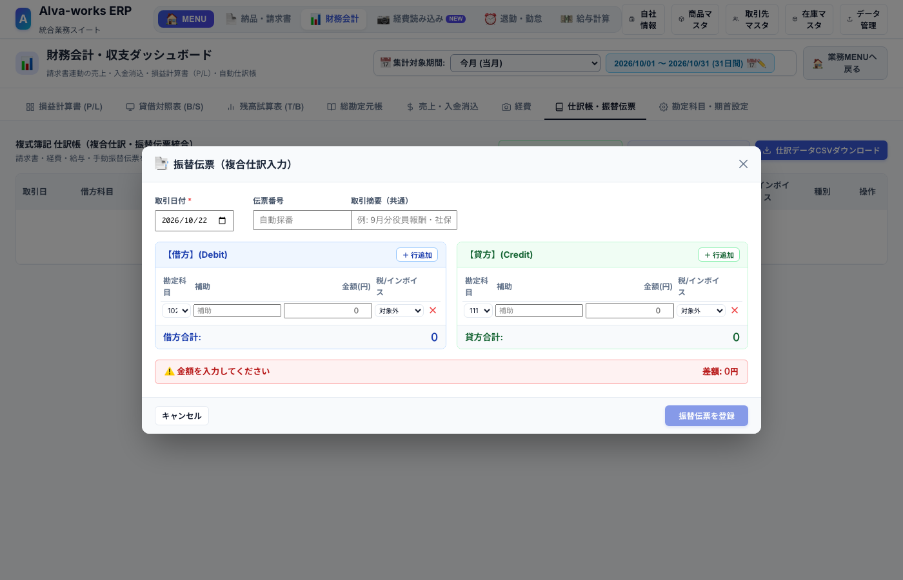
2. 月末の「3分健康診断（数字チェック）」
月末になったら、財務会計画面を開いて以下の3点だけをチェックしてください。これで会社の数字は完璧に守られます！
B/Sタブを開いて、上部のバッジが「✅ 貸借完全一致 (差額 0円)」になっているか確認します。 これが0円なら、計算の矛盾が一切ない証拠です。
B/Sに表示されている「102 普通預金」の金額と、月末時点の銀行通帳の残高が1円単位で一致しているか確認します。
※もし1,000円ズレていたら？ → 「総勘定元帳」タブで「普通預金」を選べば、何日のどの出入金が漏れているかが一発で分かります！
損益ダッシュボードの下部にある消費税パネルを見ます。 「お客様から預かった消費税（仮受）」から「仕入れや経費で払った消費税（仮払）」を引いた「差引納付予測額」が表示されます。 「次の決算でだいたい何十万円くらい税金を払うことになりそうか」が事前に分かるので、資金繰りに慌てずに済みます。
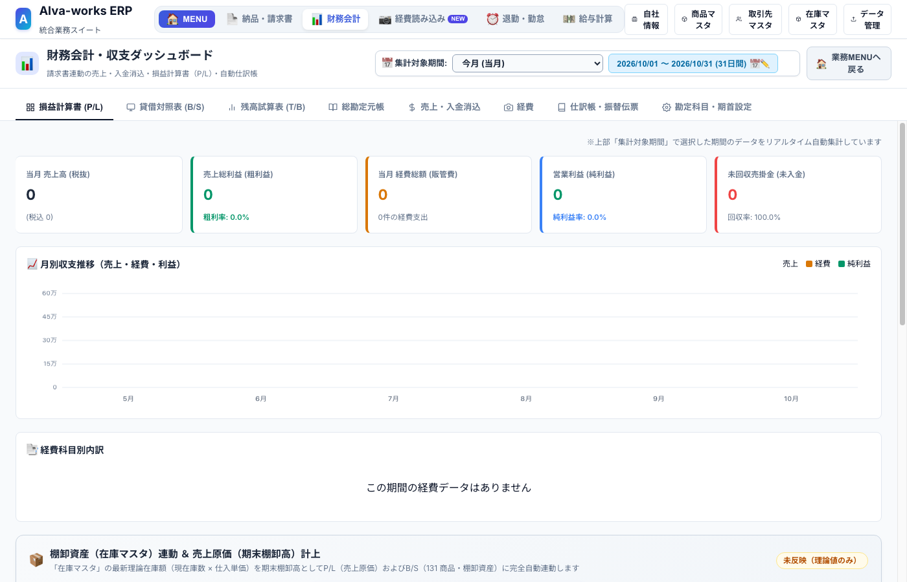
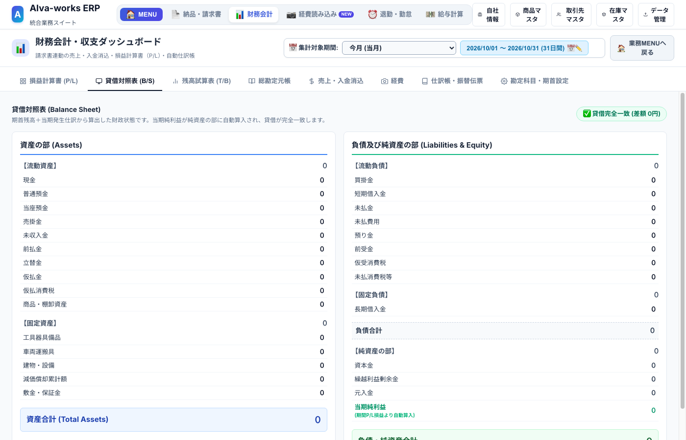
3. 確認が終わったら「月次締め（ロック）」をかけよう
月末のチェックが終わって数字が確定したら、画面上部の「月次締め」ボタンを押してその月をロックします。 ロックをかけると、過去の請求書や経費がうっかり誤って書き換えられたり削除されたりするのを防ぐことができます。
4. 決算時に税理士さんへ「仕訳データCSV」を渡す方法
決算期が来たら、提携している税理士の先生にデータを提出します。 「仕訳帳・振替伝票」タブを開いて「税理士用 仕訳データCSVダウンロード」ボタンを押すだけで、弥生会計やfreee、マネーフォワード等の主要な会計ソフトへそのままインポートできる汎用CSVファイルが出力されます。
最初は不安な操作もあるかもしれませんが、困ったときはいつでもこのマニュアルを読み返してください。 Alva-works ERPが、あなたの毎日の経理・バックオフィス業務を強力にサポートします！